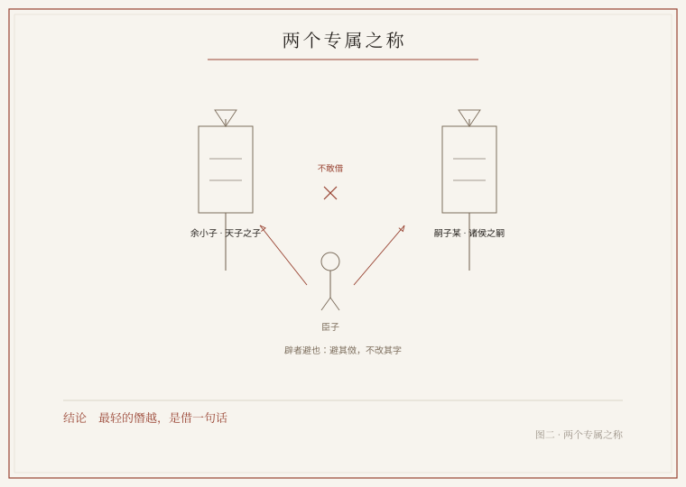

曲礼下 · 二·八 · 第 131 课
天子未除丧自称「余小子」，诸侯之嗣自称「嗣子某」，两个都是专属之称。有地之大夫之子、大夫士之子，都不敢借用。
说什么事：君大夫之子不敢自称曰「余小子」。大夫士之子不敢自称曰「嗣子某」。不敢与世子同名。
落在哪一层：礼。自称与命名的边界。
为何编在此位：上节论「不呼人之名」，此节论「自称」与「命名」——同一件事的另一面：口上的分寸，向内也向外。
【经】君大夫之子不敢自稱曰「余小子」。大夫士之子不敢自稱曰「嗣子某」。不敢與世子同名。
【注】辟天子之子未除喪之名。君大夫，天子大夫有土地者。亦辟其君之子未除喪之名。辟僣傚也，其先之生，則亦不改。世或為大。
【疏】此以下明孝子在丧，摈者接对宾客之辞也。君大夫，谓天子大夫有地者，大夫有地者则亦称曰君，故云「君大夫」也。……「不敢与世子同名」者，世子谓诸侯之適子也。诸侯之臣为其子作名，不得与君適子名同也。……若名子与君世子同，则嫌其名自比拟於君，故云「避僣傚也」。……若其子生在君之世子前，已为名，而君来同之，此是君来同己，不须易也。故《穀梁·昭七年传》云：「何为君臣同名？君子不夺人亲之所名，重其所由来也。」
君大夫 注「天子大夫有土地者」。疏「大夫有地者则亦称曰君」。
余小子 天子未除丧之自称。非泛指谦称。
嗣子某 诸侯在丧嗣子之称。某，代其名。
辟 《释文》「音避，本又作避」。避开，不是改变。
僣傚 注「辟僣傚也」。僣为越位，傚为仿效，二者相连。
不改 注「其先之生，则亦不改」。子生在前、君后同名者，不必改。
有地大夫的儿子，不敢自称「余小子」；大夫、士的儿子，不敢自称「嗣子某」；也不敢与国君的嫡子同名。
「余小子」「嗣子某」各是一部人的专用语。用错不是措辞不当，是占了别人的位。此节所防的，是最轻的一种僭越：不是夺权，是借词。
第一层 自称是最小的僭 不夺人土地，不夺人臣属，只借一句话。礼恰恰从这一句开始管。
第二层 两个专属 「余小子」属天子之子，「嗣子某」属诸侯之嗣。二者一为天下，一为一国，等级分明，不可通借。
第三层 先名后同不改 若子生在前，君后来与之同名，则不改。疏引《穀梁》「君子不夺人亲之所名，重其所由来也」。此处礼让位于孝：名是父亲给的，不能因君来同而收回。
第四层 避的是傚，不是字 注「辟僣傚也」。所避者，是仿效的姿态，不是那几个字本身。故同名者不必改，自称者不可借。
与今日何干 头衔的借用是最容易滑过去的僭越：把「我们团队」说成「我们公司」，把「协助」说成「负责」。话一出口，位就挪了一格。
| 左 | 右 |
|---|---|
| 君大夫之子 | 天子大夫有地者之子 |
| 不敢自称余小子 | 辟天子之子未除丧之名 |
| 大夫士之子 | 诸侯之大夫与士之子 |
| 不敢自称嗣子某 | 辟其君之子未除丧之名 |
| 不敢与世子同名 | 辟僣傚 |
| 其先之生则不改 | 不夺人亲之所名 |
画两枚并排的竖牌，牌面各留一道空白（示意有称而未书），牌上方各画一顶极简的冠（一顶略高、一顶略低），冠与牌之间以细线相连；两牌之下各画一个极小的人形侧影，抬手向牌，手与牌之间画一道短斜线并加一撇，示意不敢取用。两枚牌之间画一道极淡的竖虚线。不写文字。赭色只用在两道短斜线上。
